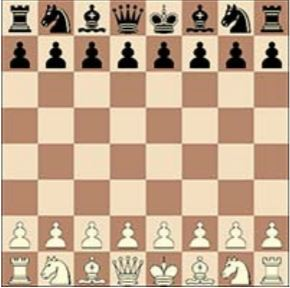
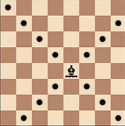
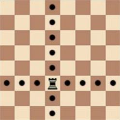
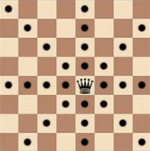
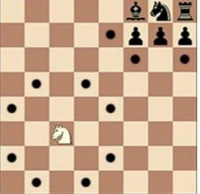
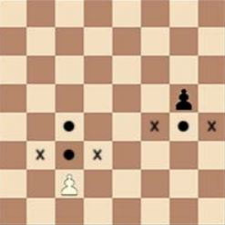
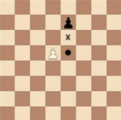
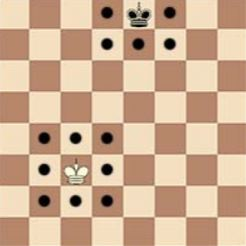

Rules
BASIC RULES OF PLAY
The nature and objectives of the game of chess
1.1 The game of chess is played between two opponents who move their pieces alternately
on a square board called a ‘chessboard’. The player with the white pieces commences the
game. A player is said to ‘have the move’, when his opponent’s move has been ‘made’.
(See Article 6.7)
1.2 The objective of each player is to place the opponent’s king ‘under attack’ in such a way
that the opponent has no legal move. The player who achieves this goal is said to have
‘checkmated’ the opponent’s king and to have won the game. Leaving one’s own king
under attack, exposing one’s own king to attack and also ’capturing’ the opponent’s king
are not allowed. The opponent whose king has been checkmated has lost the game.
1.3 If the position is such that neither player can possibly checkmate, the game is drawn.
The initial position of the pieces on the chessboard
2.1 The chessboard is composed of an 8 x 8 grid of 64 equal squares alternately light (the
‘white’ squares) and dark (the ‘black’ squares).
The chessboard is placed between the players in such a way that the near corner square
to the right of the player is white.
2.2 At the beginning of the game one player has 16 light-coloured pieces (the ‘white’ pieces);
the other has 16 dark-coloured pieces (the ‘black’ pieces).
2.3 The initial position of the pieces on the chessboard is as follows:

2.4 The eight vertical columns of squares are called ‘files’. The eight horizontal rows of
squares are called ‘ranks’. A straight line of squares of the same colour, running from one
edge of the board to an adjacent edge, is called a ‘diagonal’.
The moves of the pieces
3.1 It is not permitted to move a piece to a square occupied by a piece of the same colour. If
a piece moves to a square occupied by an opponent’s piece the latter is captured and
removed from the chessboard as part of the same move. A piece is said to attack an
opponent’s piece if the piece could make a capture on that square according to the
Articles 3.2 to 3.8.
A piece is considered to attack a square, even if such a piece is constrained from moving
to that square because it would then leave or place the king of its own colour under
attack.
3.2 The bishop may move to any square along a diagonal on which it stands.

3.3 The rook may move to any square along the file or the rank on which it stands.

3.4 The queen may move to any square along the file, the rank or a diagonal on which it
stands.

3.5 When making these moves the bishop, rook or queen may not move over any intervening
pieces.
3.6 The knight may move to one of the squares nearest to that on which it stands but not on
the same rank, file or diagonal.

3.7 a. The pawn may move forward to the unoccupied square immediately in front of it on
the same file, or
b. on its first move the pawn may move as in 3.7.a or alternatively it may advance two
squares along the same file provided both squares are unoccupied, or
c. the pawn may move to a square occupied by an opponent’s piece, which is
diagonally in front of it on an adjacent file, capturing that piece.

d. A pawn attacking a square crossed by an opponent’s pawn which has advanced two squares in one move from its original square may capture this opponent’s pawn as
though the latter had been moved only one square. This capture is only legal on the move following this advance and is called an ‘en passant’ capture.

e. When a pawn reaches the rank furthest from its starting position it must be
exchanged as part of the same move on the same square for a new queen, rook,
bishop or knight of the same colour. The player’s choice is not restricted to pieces
that have been captured previously. This exchange of a pawn for another piece is
called ‘promotion’ and the effect of the new piece is immediate.
3.8 a. There are two different ways of moving the king:
by moving to any adjoining square not attacked by one or more of the opponent’s
pieces.

or by ‘castling’. This is a move of the king and either rook of the same colour along
the player’s first rank, counting as a single move of the king and executed as
follows: the king is transferred from its original square two squares towards the
rook on its original square, then that rook is transferred to the square the king has
just crossed.
b. (1) The right to castle has been lost:
[a] if the king has already moved, or
[b] with a rook that has already moved.
(2) Castling is prevented temporarily:
[a] if the square on which the king stands, or the square which it must
cross, or the square which it is to occupy, is attacked by one or more of
the opponent's pieces, or
[b] if there is any piece between the king and the rook with which castling is
to be effected.
3.9 The king is said to be 'in check' if it is attacked by one or more of the opponent's pieces,
even if such pieces are constrained from moving to that square because they would then
leave or place their own king in check. No piece can be moved that will either expose the
king of the same colour to check or leave that king in check.
The act of moving the pieces
4.1 Each move must be made with one hand only.
4.2 Provided that he first expresses his intention (for example by saying „j’adoube“ or “I
adjust”), the player having the move may adjust one or more pieces on their squares.
4.3 Except as provided in Article 4.2, if the player having the move deliberately touches on
the chessboard:
a. one or more of his own pieces, he must move the first piece touched which can be
moved
b. one or more of his opponent’s pieces, he must capture the first piece touched
which can be captured
c. one piece of each colour, he must capture the opponent’s piece with his piece or, if
this is illegal, move or capture the first piece touched which can be moved or
captured. If it is unclear, whether the player’s own piece or his opponent’s was
touched first, the player’s own piece shall be considered to have been touched
before his opponent’s.
4.4 If a player having the move:
a. deliberately touches his king and rook he must castle on that side if it is legal to do
so
b. deliberately touches a rook and then his king he is not allowed to castle on that side
on that move and the situation shall be governed by Article 4.3.a
c. intending to castle, touches the king or king and rook at the same time, but castling
on that side is illegal, the player must make another legal move with his king (which
may include castling on the other side). If the king has no legal move, the player is
free to make any legal move.
d. promotes a pawn, the choice of the piece is finalised, when the piece has touched
the square of promotion.
4.5 If none of the pieces touched can be moved or captured, the player may make any legal
move.
4.6 When, as a legal move or part of a legal move, a piece has been released on a square, it
cannot be moved to another square on this move. The move is then considered to have
been made:
a. in the case of a capture, when the captured piece has been removed from the
chessboard and the player, having placed his own piece on its new square, has
released this capturing piece from his hand.
b. in the case of castling, when the player's hand has released the rook on the square
previously crossed by the king. When the player has released the king from his
hand, the move is not yet made, but the player no longer has the right to make any
move other than castling on that side, if this is legal.
c. in the case of the promotion of a pawn, when the pawn has been removed from the
chessboard and the player's hand has released the new piece after placing it on the
promotion square. If the player has released from his hand the pawn that has
reached the promotion square, the move is not yet made, but the player no longer
has the right to play the pawn to another square.
The move is called legal when all the relevant requirements of Article 3 have been
fulfilled. If the move is not legal, another move shall be made instead as per Article 4.5.
4.7 A player forfeits his right to a claim against his opponent’s violation of Article 4 once he
deliberately touches a piece.
The completion of the game
5.1 a. The game is won by the player who has checkmated his opponent’s king. This
immediately ends the game, provided that the move producing the checkmate
position was a legal move.
b. The game is won by the player whose opponent declares he resigns. This
immediately ends the game.
5.2 a. The game is drawn when the player to move has no legal move and his king is not in
check. The game is said to end in ‘stalemate’. This immediately ends the game,
provided that the move producing the stalemate position was legal.
b. The game is drawn when a position has arisen in which neither player can
checkmate the opponent’s king with any series of legal moves. The game is said to
end in a ‘dead position’. This immediately ends the game, provided that the move
producing the position was legal. (See Article 9.6)
c. The game is drawn upon agreement between the two players during the game. This
immediately ends the game. (See Article 9.1)
d. The game may be drawn if any identical position is about to appear or has appeared
on the chessboard at least three times. (See Article 9.2)
e. The game may be drawn if each player has made at least the last 50 consecutive
moves without the movement of any pawn and without any capture. (See Article
9.3)
BASIC RULES OF PLAY
The chess clock
6.1 ‘Chess clock’ means a clock with two time displays, connected to each other in such a way
that only one of them can run at one time.
‘Clock’ in the Laws of Chess, means one of the two time displays.
Each time display has a ‘flag’.
‘Flag fall’ means the expiration of the allotted time for a player.
6.2 a. When using a chess clock, each player must make a minimum number of moves or
all moves in an allotted period of time and/or may be allocated an additional
amount of time with each move. All these must be specified in advance.
b. The time saved by a player during one period is added to his time available for the
next period, except in the ‘time delay’ mode.
In the time delay mode both players receive an allotted ‘main thinking time’. Each
player also receives a ‘fixed extra time’ with every move. The countdown of the
main time only commences after the fixed time has expired. Provided the player
stops his clock before the expiration of the fixed time, the main thinking time does
not change, irrespective of the proportion of the fixed time used.
6.3 Immediately after a flag falls, the requirements of article 6.2 a. must be checked.
6.4 Before the start of the game the arbiter decides where the chess clock is placed.
6.5 At the time determined for the start of the game the clock of the player who has the
white pieces is started.
6.6 a. Any player who arrives at the chessboard after the start of the session shall lose the
game. Thus the default time is 0 minutes. The rules of a competition may specify
otherwise.
b. If the rules of a competition specify a different default time, the following shall
apply. If neither player is present initially, the player who has the white pieces shall
lose all the time that elapses until he arrives, unless the rules of the competition
specify or the arbiter decides otherwise.
6.7 a. During the game each player, having made his move on the chessboard, shall stop
his own clock and start his opponent’s clock. A player must always be allowed to
stop his clock. His move is not considered to have been completed until he has done
so, unless the move that was made ends the game. (See the Articles 5.1.a, 5.2.a,
5.2.b, 5.2.c and 9.6)
The time between making the move on the chessboard and stopping his own clock
and starting his opponent‘s clock is regarded as part of the time allotted to the
player.
b. A player must stop his clock with the same hand as that with which he made his
move. It is forbidden for a player to keep his finger on the button or to ‘hover’ over
it.
c. The players must handle the chess clock properly. It is forbidden to punch it forcibly,
to pick it up or to knock it over. Improper clock handling shall be penalised in
accordance with Article 13.4.
d. If a player is unable to use the clock, an assistant, who must be acceptable to the
arbiter, may be provided by the player to perform this operation. His clock shall be
adjusted by the arbiter in an equitable way.
6.8 A flag is considered to have fallen when the arbiter observes the fact or when either
player has made a valid claim to that effect.
6.9 Except where one of the Articles: 5.1.a, 5.1.b, 5.2.a, 5.2.b, 5.2.c applies, if a player does
not complete the prescribed number of moves in the allotted time, the game is lost by
the player. However, the game is drawn, if the position is such that the opponent cannot
checkmate the player’s king by any possible series of legal moves.
6.10 a. Every indication given by the clocks is considered to be conclusive in the absence of
any evident defect. A chess clock with an evident defect shall be replaced. The
arbiter shall replace the clock and use his best judgment when determining the
times to be shown on the replacement chess clocks.
b. If during a game it is found that the setting of either or both clocks was incorrect,
either player or the arbiter shall stop the clocks immediately. The arbiter shall install
the correct setting and adjust the times and move counter. He shall use his best
judgement when determining the correct settings.
6.11 If both flags have fallen and it is impossible to establish which flag fell first then:
a. the game shall continue if it happens in any period of the game except the last
period.
b. the game is drawn if it happens in the period of a game, in which all remaining
moves must be completed.
6.12 a. If the game needs to be interrupted, the arbiter shall stop the clocks.
b. A player may stop the clocks only in order to seek the arbiter’s assistance, for
example when promotion has taken place and the piece required is not available.
c. The arbiter shall decide when the game is to be restarted in either case.
d. If a player stops the clocks in order to seek the arbiter’s assistance, the arbiter shall
determine if the player had any valid reason for doing so. If it is obvious that the
player had no valid reason for stopping the clocks, the player shall be penalised
according to Article 13.4.
6.13 If an irregularity occurs and/or the pieces have to be restored to a previous position, the
arbiter shall use his best judgement to determine the times to be shown on the clocks. He
shall also, if necessary, adjust the clock’s move counter.
6.14 Screens, monitors, or demonstration boards showing the current position on the
chessboard, the moves and the number of moves made, and clocks which also show the
number of moves, are allowed in the playing hall. However, the player may not make a
claim relying solely on information shown in this manner.
Irregularities
7.1 a. If during a game it is found that the initial position of the pieces was incorrect, the
game shall be cancelled and a new game played.
b. If during a game it is found that the chessboard has been placed contrary to Article
2.1, the game continues but the position reached must be transferred to a correctly
placed chessboard.
7.2 If a game has begun with colours reversed then it shall continue, unless the arbiter rules
otherwise.
7.3 If a player displaces one or more pieces, he shall re-establish the correct position on his
own time. If necessary, either the player or his opponent shall stop the clocks and ask for
the arbiter’s assistance. The arbiter may penalise the player who displaced the pieces.
7.4 a. If during a game it is found that an illegal move, including failing to meet the
requirements of the promotion of a pawn or capturing the opponent’s king, has
been completed, the position immediately before the irregularity shall be
reinstated. If the position immediately before the irregularity cannot be determined
the game shall continue from the last identifiable position prior to the irregularity.
The clocks shall be adjusted according to Article 6.13. The Articles 4.3 and 4.6 apply
to the move replacing the illegal move. The game shall then continue from this reinstated position.
b. After the action taken under Article 7.4.a, for the first two illegal moves by a player
the arbiter shall give two minutes extra time to his opponent in each instance; for a
third illegal move by the same player, the arbiter shall declare the game lost by this
player. However, the game is drawn if the position is such that the opponent cannot
checkmate the player’s king by any possible series of legal moves.
7.5 If during a game it is found that pieces have been displaced from their squares, the
position before the irregularity shall be re-instated. If the position immediately before the
irregularity cannot be determined, the game shall continue from the last identifiable
position prior to the irregularity. The clocks shall be adjusted according to Article 6.13.
The game shall then continue from this re-instated position.
The recording of the moves
8.1 In the course of play each player is required to record his own moves and those of his
opponent in the correct manner, move after move, as clearly and legibily as possible, in
the algebraic notation (See Appendix C), on the scoresheet prescribed for the
competition.
It is forbidden to write the moves in advance, unless the player is claiming a draw
according to Article 9.2, or 9.3 or adjourning a game according to the Guidelines of
Adjourned Games point 1.a.
A player may reply to his opponent’s move before recording it, if he so wishes. He must
record his previous move before making another.
Both players must record the offer of a draw on the scoresheet. (See Appendix C.13)
If a player is unable to keep score, an assistant, who must be acceptable to the arbiter,
may be provided by the player to write the moves. His clock shall be adjusted by the
arbiter in an equitable way.
8.2 The scoresheet shall be visible to the arbiter throughout the game.
8.3 The scoresheets are the property of the organisers of the event.
8.4 If a player has less than five minutes left on his clock at some stage in a period and does
not have additional time of 30 seconds or more added with each move, then for the
remainder of the period he is not obliged to meet the requirements of Article 8.1.
Immediately after one flag has fallen the player must update his scoresheet completely
before moving a piece on the chessboard.
8.5 a. If neither player is required to keep score under Article 8.4, the arbiter or an
assistant should try to be present and keep score. In this case, immediately after
one flag has fallen, the arbiter shall stop the clocks. Then both players shall update
their scoresheets, using the arbiter’s or the opponent’s scoresheet.
b. If only one player is not required to keep score under Article 8.4, he must, as soon
as either flag has fallen, update his scoresheet completely before moving a piece on
the chessboard. Provided it is the player’s move, he may use his opponent’s
scoresheet, but must return it before making a move.
c. If no complete scoresheet is available, the players must reconstruct the game on a
second chessboard under the control of the arbiter or an assistant. He shall first
record the actual game position, clock times and the number of moves made, if this
information is available, before reconstruction takes place.
8.6 If the scoresheets cannot be brought up to date showing that a player has overstepped
the allotted time, the next move made shall be considered as the first of the following
time period, unless there is evidence that more moves have been made.
8.7 At the conclusion of the game both players shall sign both scoresheets, indicating the
result of the game. Even if incorrect, this result shall stand, unless the arbiter decides
otherwise.
The drawn game
9.1 a. The rules of a competition may specify that players cannot agree to a draw,
whether in less than a specified number of moves or at all, without the consent of
the arbiter.
b. If the rules of a competition allow a draw agreement the following apply:
(1) A player wishing to offer a draw shall do so after having made a move on the
chessboard and before stopping his clock and starting the opponent’s clock.
An offer at any other time during play is still valid but Article 12.6 must be
considered. No conditions can be attached to the offer. In both cases the offer
cannot be withdrawn and remains valid until the opponent accepts it, rejects
it orally, rejects it by touching a piece with the intention of moving or
capturing it, or the game is concluded in some other way.
(2) The offer of a draw shall be noted by each player on his scoresheet with a
symbol. (See Appendix C.13)
(3) A claim of a draw under Article 9.2, 9.3 or 10.2 shall be considered to be an
offer of a draw.
9.2 The game is drawn upon a correct claim by the player having the move, when the same
position, for at least the third time (not necessarily by a repetition of moves):
a. is about to appear, if he first writes his move on his scoresheet and declares to the
arbiter his intention to make this move, or
b. has just appeared, and the player claiming the draw has the move.
Positions as in (a) and (b) are considered the same, if the same player has the move,
pieces of the same kind and colour occupy the same squares, and the possible moves of
all the pieces of both players are the same.
Positions are not the same if a pawn that could have been captured en passant can no
longer be captured in this manner. When a king or a rook is forced to move, it will lose its
castling rights, if any, only after it is moved.
9.3 The game is drawn, upon a correct claim by the player having the move, if:
a. he writes his move on his scoresheet and declares to the arbiter his intention to
make this move, which shall result in the last 50 moves having been made by each
player without the movement of any pawn and without any capture, or
b. the last 50 consecutive moves have been made by each player without the
movement of any pawn and without any capture.
9.4 If the player touches a piece as in Article 4.3 without having claimed the draw he loses the
right to claim, as in Article 9.2 or 9.3, on that move.
9.5 If a player claims a draw as in Article 9.2 or 9.3 he may stop both clocks. (See Article
6.12.b) He is not allowed to withdraw his claim.
a. If the claim is found to be correct, the game is immediately drawn.
b. If the claim is found to be incorrect, the arbiter shall add three minutes to the
opponent’s remaining thinking time. Then the game shall continue. If the claim was
based on an intended move, this move must be made as according to Article 4.
9.6 The game is drawn when a position is reached from which a checkmate cannot occur by
any possible series of legal moves. This immediately ends the game, provided that the
move producing this position was legal.
Quickplay Finish
10.1 A ‘quickplay finish’ is the phase of a game when all the (remaining) moves must be made
in a limited time.
10.2 If the player, having the move, has less than two minutes left on his clock, he may claim a
draw before his flag falls. He shall summon the arbiter and may stop the clocks. (See
Article 6.12.b)
a. If the arbiter agrees the opponent is making no effort to win the game by normal
means, or that it is not possible to win by normal means, then he shall declare the
game drawn. Otherwise he shall postpone his decision or reject the claim.
b. If the arbiter postpones his decision, the opponent may be awarded two extra
minutes and the game shall continue, if possible in the presence of an arbiter. The
arbiter shall declare the final result later in the game or as soon as possible after a
flag has fallen. He shall declare the game drawn if he agrees that the final position
cannot be won by normal means, or that the opponent was not making sufficient
attempts to win by normal means.
c. If the arbiter has rejected the claim, the opponent shall be awarded two extra
minutes time.
d. The decision of the arbiter shall be final relating to (a), (b) and (c)
Points
11.1 Unless announced otherwise in advance, a player who wins his game, or wins by forfeit,
scores one point (1), a player who loses his game, or forfeits scores no points (0) and a
player who draws his game scores a half point (½).
The conduct of the players
12.1 The players shall take no action that will bring the game of chess into disrepute.
12.2 Players are not allowed to leave the ‘playing venue’ without permission from the arbiter.
The playing venue is defined as the playing area, rest rooms, refreshment area, area set
aside for smoking and other places as designated by the arbiter.
The player having the move is not allowed to leave the playing area without permission of
the arbiter.
12.3 a. During play the players are forbidden to make use of any notes, sources of
information or advice, or analyse on another chessboard.
b. Without the permission of the arbiter a player is forbidden to have a mobile phone
or other electronic means of communication in the playing venue, unless they are
completely switched off. If any such device produces a sound, the player shall lose
the game. The opponent shall win. However, if the opponent cannot win the game
by any series of legal moves, his score shall be a draw.
c. Smoking is permitted only in the section of the venue designated by the arbiter .
12.4 The scoresheet shall be used only for recording the moves, the times of the clocks, the
offers of a draw, and matters relating to a claim and other relevant data.
12.5 Players who have finished their games shall be considered to be spectators.
12.6 It is forbidden to distract or annoy the opponent in any manner whatsoever. This includes
unreasonable claims, unreasonable offers of a draw or the introduction of a source of
noise into the playing area.
12.7 Infraction of any part of Articles 12.1 to 12.6 shall lead to penalties in accordance with
Article 13.4.
12.8 Persistent refusal by a player to comply with the Laws of Chess shall be penalised by loss
of the game. The arbiter shall decide the score of the opponent.
12.9 If both players are found guilty according to Article 12.8, the game shall be declared lost
by both players.
12.10 In the case of Article 10.2.d or Appendix D a player may not appeal against the decision of
the arbiter.
Otherwise a player may appeal against any decision of the arbiter, unless the rules of the
competition specify otherwise.
The role of the Arbiter
13.1 The arbiter shall see that the Laws of Chess are strictly observed.
13.2 The arbiter shall act in the best interest of the competition. He should ensure that a good
playing environment is maintained and that the players are not disturbed. He shall
supervise the progress of the competition.
13.3 The arbiter shall observe the games, especially when the players are short of time,
enforce decisions he has made and impose penalties on players where appropriate.
13.4 The arbiter can apply one or more of the following penalties:
a. warning
b. increasing the remaining time of the opponent
c. reducing the remaining time of the offending player
d. declaring the game to be lost
e. reducing the points scored in the game by the offending party
f. increasing the points scored in the game by the opponent to the maximum available
for that game
g. expulsion from the event.
13.5 The arbiter may award either or both players additional time in the event of external
disturbance of the game.
13.6 The arbiter must not intervene in a game except in cases described by the Laws of Chess.
He shall not indicate the number of moves made, except in applying Article 8.5, when at
least one flag has fallen. The arbiter shall refrain from informing a player that his
opponent has completed a move or that the player has not pressed his clock.
13.7 a. Spectators and players in other games are not to speak about or otherwise interfere
in a game. If necessary, the arbiter may expel offenders from the playing venue. If
someone observes an irregularity, he may inform only the arbiter.
b. Unless authorised by the arbiter, it is forbidden for anybody to use a mobile phone
or any kind of communication device in the playing venue and any contiguous area
designated by the arbiter.
FIDE
14.1 Member federations may ask FIDE to give an official decision about problems relating to
the Laws of Chess.